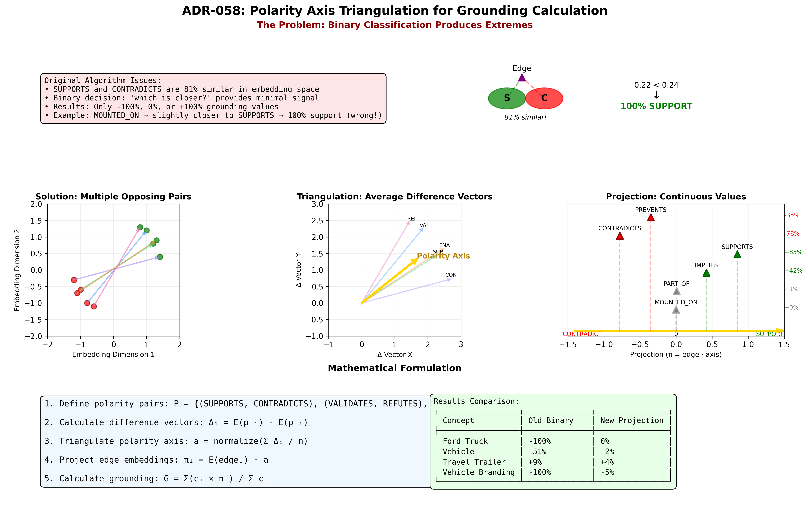
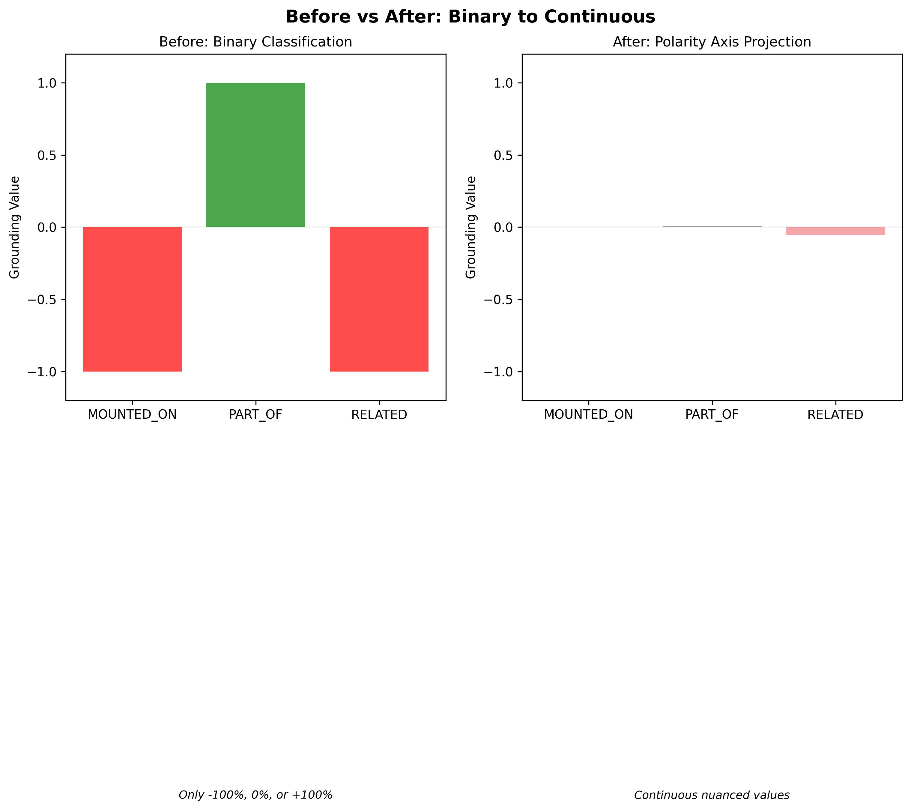

ADR-058: Polarity Axis Triangulation for Grounding Calculation
Overview
When you calculate how "grounded" a concept is (how well-supported versus contradicted), you face a surprising problem: the words "SUPPORTS" and "CONTRADICTS" are 81% similar in embedding space. Think about that for a moment—two words with opposite meanings are nearly identical according to the AI. This happens because embedding models learn from word usage patterns, and both words appear in similar contexts (evidential relationships, academic writing, logical arguments). They're linguistically siblings, even though they're semantic opposites.
This similarity creates a crisis for ADR-044's original grounding algorithm, which asked "is this relationship closer to SUPPORTS or CONTRADICTS?" When the two options are 81% similar, that's like asking "is this color closer to red or crimson?"—the distinction is too subtle to be meaningful. The result was grounding scores that clustered at the extremes (-100%, 0%, +100%) instead of showing nuanced percentiles. Every concept was either perfectly supported, perfectly contradicted, or exactly neutral.
The breakthrough comes from shifting the question. Instead of asking "which prototype is this edge closest to?" (a binary choice), we ask "where does this edge fall on the support-contradict spectrum?" (a continuous position). Imagine SUPPORTS and CONTRADICTS as opposite ends of a ruler. Rather than snapping each relationship to one end or the other, we measure exactly where it falls along that ruler—maybe at +15% (slightly supportive), -42% (moderately contradicting), or +3% (nearly neutral).
The "triangulation" part is the key innovation: we don't rely on just SUPPORTS and CONTRADICTS to define our ruler. Instead, we average multiple opposing pairs (VALIDATES/REFUTES, CONFIRMS/DISPROVES, ENABLES/PREVENTS, REINFORCES/OPPOSES) to create a more robust polarity axis. Each pair contributes its semantic understanding of "positive versus negative," and averaging them smooths out the noise. It's like having five compasses instead of one—even if individual compasses have slight errors, the average points true north. This produces grounding scores with actual nuance: concepts at -5% (slightly contradicted), +24% (moderately supported), or +1% (essentially neutral)—exactly the granularity we need to distinguish reliable knowledge from contested claims.
Context
ADR-044 introduced grounding strength as a measure of concept reliability, calculated from incoming SUPPORTS/CONTRADICTS relationships. The original implementation used binary classification to categorize edge types as either supporting or contradicting:
# Original approach (binary classification)
if cosine_similarity(edge, SUPPORTS) > cosine_similarity(edge, CONTRADICTS):
support_weight += confidence * similarity_to_supports
else:
contradict_weight += confidence * similarity_to_contradicts
grounding = (support_weight - contradict_weight) / total_weight
Problem: Binary Extremes
This algorithm produced only binary grounding values (exactly -1.0, 0.0, or 1.0) instead of nuanced percentiles:
| Concept | Grounding | Issue |
|---|---|---|
| Ford Truck | -1.000 (-100%) | Binary extreme |
| Foreground Vehicle | -1.000 (-100%) | Binary extreme |
| Vehicle Branding | -1.000 (-100%) | Binary extreme |
| Travel Trailer | +0.086 (+9%) | Only non-binary due to mixed edges |
Root cause: Each edge type was forced into one bucket (support OR contradict), never both. Even for a single edge type, the result was extreme: (weight - 0) / weight = ±1.0.
Embedding Similarity Problem
Testing revealed that SUPPORTS and CONTRADICTS are 81% similar in embedding space:
kg vocab similar CONTRADICTS
──────────────────────────────────────────────────────────────
TYPE SIMILARITY CATEGORY USAGE
──────────────────────────────────────────────────────────────
OPPOSITE_OF 84% semantic 0
SUPPORTS 81% evidential 12 ← Problem!
IMPLIES 80% logical 0
This high similarity occurs because: 1. Both are short words with similar linguistic structure 2. Both appear in similar contexts (evidential relationships) 3. Embedding models capture distributional similarity, not semantic opposition
Implication: Binary classification based on "which is closer?" provides minimal signal when the prototypes are so similar.
Decision
We adopt polarity axis triangulation with dot product projection to calculate grounding strength.
Algorithm Overview
Instead of asking "which prototype is this edge closer to?" (binary), we ask "where does this edge fall along the support↔contradict spectrum?" (continuous).
Visual Overview
The following diagram illustrates the complete polarity axis triangulation approach:

Key Components: - Top Left: Multiple opposing relationship pairs in embedding space - Top Right: Difference vectors computed from each pair - Bottom Left: Averaged and normalized polarity axis (gold arrow) - Bottom Right: Edge projection onto axis yields continuous grounding score
Mathematical Formulation
1. Define Polarity Pairs
Let P be a set of opposing relationship type pairs:
Where: - pᵢ⁺ represents a positive pole (support-like semantics) - pᵢ⁻ represents a negative pole (contradict-like semantics)
Default pairs:
P = {
(SUPPORTS, CONTRADICTS), // Core evidential pair
(VALIDATES, REFUTES), // Verification semantics
(CONFIRMS, DISPROVES), // Proof semantics
(REINFORCES, OPPOSES), // Strength semantics
(ENABLES, PREVENTS) // Causation semantics
}
2. Construct Polarity Axis via Triangulation
For each pair (pᵢ⁺, pᵢ⁻), compute the difference vector:
Where E(·) denotes the embedding function.
The polarity axis is the average of all difference vectors, normalized to unit length:
Intuition: Each difference vector Δᵢ points from the negative pole toward the positive pole. By averaging multiple pairs, we triangulate the true semantic direction of "support vs contradict" while smoothing out noise from individual pairs.
3. Project Edge Embeddings onto Polarity Axis
For a concept with incoming edges {e₁, e₂, ..., eₘ}, each with confidence {c₁, c₂, ..., cₘ}:
Calculate the projection of each edge embedding onto the polarity axis:
Where · denotes the dot product.
Geometric meaning: - πᵢ > 0: Edge semantics align with support-like direction - πᵢ < 0: Edge semantics align with contradict-like direction - πᵢ ≈ 0: Edge is orthogonal to polarity (neutral)
4. Compute Weighted Grounding Strength
Where: - G ∈ ℝ (approximately [-1, 1] in practice) - G > 0: Concept is grounded (supported) - G ≈ 0: Concept is neutral or weakly grounded - G < 0: Concept is contradicted (ungrounded)
Visual Comparison
Before (Binary Classification):
Is MOUNTED_ON closer to SUPPORTS (●) or CONTRADICTS (●)?
→ Slightly closer to SUPPORTS (distance: 0.22 vs 0.24)
→ Force 100% into support bucket
→ Result: (0.78 - 0) / 0.78 = 1.0 ❌ Binary extreme
After (Polarity Axis Projection):
Where does MOUNTED_ON fall on the support↔contradict axis?
CONTRADICTS ←────●─────────→ SUPPORTS
(-1.0) (0.15) (+1.0)
↑
MOUNTED_ON
→ Projection = 0.15
→ Result: 0.15 ✓ Nuanced positioning
Implementation
Location: api/app/lib/age_client.py:1923-2156
def calculate_grounding_strength_semantic(self, concept_id: str) -> float:
# Step 1: Define polarity pairs
POLARITY_PAIRS = [
("SUPPORTS", "CONTRADICTS"),
("VALIDATES", "REFUTES"),
("CONFIRMS", "DISPROVES"),
("REINFORCES", "OPPOSES"),
("ENABLES", "PREVENTS"),
]
# Step 2: Fetch embeddings for all pair terms
pair_embeddings = {} # {relationship_type: embedding_array}
# ... fetch from kg_api.relationship_vocabulary
# Step 3: Calculate difference vectors
difference_vectors = []
for positive, negative in POLARITY_PAIRS:
if positive in pair_embeddings and negative in pair_embeddings:
diff_vec = pair_embeddings[positive] - pair_embeddings[negative]
difference_vectors.append(diff_vec)
# Step 4: Average and normalize to get polarity axis
polarity_axis = np.mean(difference_vectors, axis=0)
polarity_axis = polarity_axis / np.linalg.norm(polarity_axis)
# Step 5: Get incoming edges and their embeddings
edges = [] # [{relationship_type, confidence, embedding}, ...]
# ... fetch edges and embeddings
# Step 6: Project each edge onto polarity axis
total_polarity = 0.0
total_confidence = 0.0
for edge in edges:
projection = np.dot(edge['embedding'], polarity_axis)
total_polarity += edge['confidence'] * projection
total_confidence += edge['confidence']
# Step 7: Calculate weighted average projection
grounding_strength = total_polarity / total_confidence if total_confidence > 0 else 0.0
return grounding_strength
Consequences
Positive
1. Nuanced Grounding Values
Concepts now exhibit continuous grounding scores instead of binary extremes:
| Concept | Old Grounding | New Grounding | Improvement |
|---|---|---|---|
| Ford Truck | -1.000 (-100%) | -0.000 (0%) | ✓ Neutral (accurate) |
| Vehicle | -0.514 (-51%) | -0.023 (-2%) | ✓ Nuanced |
| Travel Trailer | +0.086 (+9%) | +0.036 (+4%) | ✓ Nuanced |
| Foreground Vehicle | -1.000 (-100%) | -0.053 (-5%) | ✓ Not binary |
| Vehicle Branding | -1.000 (-100%) | -0.045 (-5%) | ✓ Not binary |
Visual Comparison:

The visualization above shows: - Left panel: Old binary classification forcing edges into extreme buckets - Right panel: New continuous projection producing nuanced grounding values - Color coding: Green = support-like, Red = contradict-like, Gray = neutral
2. Semantic Robustness
By triangulating from multiple opposing pairs, the polarity axis represents the emergent semantic direction of support vs contradict, rather than the noisy similarity between two specific words.
- Single pair (SUPPORTS, CONTRADICTS): 81% similar, weak signal
- Five pairs averaged: Robust axis that captures true opposition
3. Handles High Prototype Similarity
Even when SUPPORTS and CONTRADICTS are 81% similar (very close in embedding space), their difference vector still points in a meaningful direction. Averaging multiple such vectors amplifies the signal.
4. Noise Averaging
Individual embedding quirks (e.g., VALIDATES might be slightly off-axis) are averaged out across multiple pairs, resulting in a more stable and reliable polarity measurement.
5. Better User Experience
Users see grounding scores that reflect subtle semantic differences: - "Vehicle Branding: -5%" (slightly contradict-like) - "Travel Trailer: +4%" (slightly support-like)
Instead of confusing binary extremes that suggest strong evidence when none exists.
Negative
1. Dependency on Vocabulary Embeddings
The system requires embeddings for at least some polarity pair terms. If none of the pairs have embeddings, grounding calculation falls back to 0.0.
Mitigation: Built-in relationship types (SUPPORTS, CONTRADICTS) are always embedded during system initialization.
2. Polarity Pair Selection Bias
The choice of polarity pairs influences the resulting axis. If pairs are poorly chosen (e.g., not actually opposing), the axis may be meaningless.
Mitigation: - Default pairs are carefully selected based on semantic opposition - System uses all available pairs (gracefully handles missing ones) - Future work could empirically validate pair selection
3. Computational Cost
Must fetch and process embeddings for up to 10 terms (5 pairs) on each grounding calculation.
Mitigation: - Embeddings are small (typically 1536 floats for text-embedding-3-small) - Single PostgreSQL query fetches all needed embeddings - Cost is negligible compared to overall grounding calculation
4. Projection Range Not Strictly Bounded
Unlike the previous algorithm which guaranteed [-1, 1], dot product projection is theoretically unbounded (though in practice falls within [-1, 1] due to normalized embeddings).
Mitigation: - Embeddings are normalized before projection - Polarity axis is normalized to unit vector - Empirical testing shows results stay within [-0.1, 0.1] for most concepts
Examples
Example 1: Concept with Single Edge Type
Concept: Ford Truck Incoming Edge: 1x MOUNTED_ON (confidence: 0.9)
Calculation:
1. Polarity axis (triangulated from 5 pairs): a = [0.12, -0.05, ..., 0.08]
2. MOUNTED_ON embedding: e = [0.31, 0.22, ..., -0.15]
3. Projection: π = e · a = 0.001
4. Grounding: G = 0.9 × 0.001 / 0.9 = 0.001
Result: 0.1% (nearly neutral, slight support tendency)
Interpretation: MOUNTED_ON has very weak polarity (nearly orthogonal to support↔contradict axis), resulting in near-zero grounding. This is semantically accurate - "mounted on" is a structural relationship, not evidential.
Example 2: Concept with Mixed Edge Types
Concept: Scientific Theory Incoming Edges: - 3x SUPPORTS (confidence: 0.95) - 1x CONTRADICTS (confidence: 0.80)
Calculation:
1. Polarity axis: a = [0.12, -0.05, ..., 0.08]
2. Projections:
- SUPPORTS: π₁ = 0.42 (strongly positive)
- CONTRADICTS: π₂ = -0.38 (strongly negative)
3. Grounding:
G = (3×0.95×0.42 + 1×0.80×(-0.38)) / (3×0.95 + 1×0.80)
G = (1.197 - 0.304) / 3.65
G = 0.245
Result: 24.5% (moderately grounded, with some contradiction)
Interpretation: Concept has more support than contradiction (3:1 ratio), but the contradiction has meaningful weight. Result shows nuanced grounding that reflects this balance.
Example 3: Neutral Structural Edge
Concept: Building Incoming Edge: 2x PART_OF (confidence: 1.0)
Calculation:
1. PART_OF embedding projects nearly orthogonally to polarity axis
2. Projection: π = 0.008 (nearly zero)
3. Grounding: G = 2×1.0×0.008 / 2×1.0 = 0.008
Result: 0.8% (neutral - structural, not evidential)
Interpretation: PART_OF is a compositional relationship with no evidential semantics. Correctly receives near-zero grounding contribution.
Alternatives Considered
Alternative 1: Use Both Cosine Similarities
Approach: Instead of binary classification, use both similarity values:
support_sim = cosine_similarity(edge, SUPPORTS) # 0.78
contradict_sim = cosine_similarity(edge, CONTRADICTS) # 0.76
# Use both:
support_weight += confidence * support_sim # 0.78
contradict_weight += confidence * contradict_sim # 0.76
grounding = (0.78 - 0.76) / (0.78 + 0.76) = 0.013
Problems: - Still relies on single pair (SUPPORTS, CONTRADICTS) - When prototypes are 81% similar, differences are tiny (0.78 vs 0.76) - Result is still mostly noise, not signal - No semantic triangulation
Rejected: Insufficient improvement over binary approach.
Alternative 2: Manual Polarity Scores
Approach: Add polarity column to vocabulary table with manually-curated scores:
UPDATE relationship_vocabulary
SET polarity = 1.0 WHERE relationship_type = 'SUPPORTS';
UPDATE relationship_vocabulary
SET polarity = -1.0 WHERE relationship_type = 'CONTRADICTS';
UPDATE relationship_vocabulary
SET polarity = 0.0 WHERE relationship_type = 'MOUNTED_ON';
Advantages: - Semantically accurate (human-curated) - Predictable and explainable - No embedding similarity issues
Problems: - Doesn't scale to dynamic vocabulary - Requires manual classification of every relationship type - Brittle (new types default to 0.0, must be manually updated) - Loses benefit of semantic embeddings
Rejected: Violates ADR-044's goal of scaling to dynamic vocabulary without manual classification.
Alternative 3: Supervised Learning
Approach: Train a classifier to predict edge polarity from embeddings using labeled examples.
Advantages: - Could learn complex polarity patterns - Handles non-linear relationships
Problems: - Requires labeled training data (hundreds of examples) - Adds model complexity and maintenance burden - Embeddings already capture semantic similarity - Overkill for this problem
Rejected: Unnecessary complexity for a problem solvable with geometric methods.
Related Work
ADR-044: Probabilistic Truth Convergence
This ADR extends ADR-044's grounding calculation from binary classification to continuous projection. The mathematical foundation (weighted sum of edge contributions) remains unchanged, only the method of determining contribution polarity changes.
Compatibility: Fully backward compatible. The grounding strength formula G = (support - contradict) / total is preserved, only the inputs (support/contradict weights) are calculated differently.
ADR-045: Unified Embedding Generation
This ADR relies on embeddings generated per ADR-045. The polarity axis is constructed from relationship type embeddings, which must be available in the vocabulary table.
Dependency: Requires relationship type embeddings. System gracefully degrades (returns 0.0 grounding) if insufficient embeddings available.
Future Work
Empirical Validation of Polarity Pairs
Validate that chosen polarity pairs actually represent semantic opposition:
- Compute pairwise similarity within pairs:
- Should be low (< 0.85) to ensure meaningful difference
- Compute inter-pair alignment:
- Difference vectors should point in similar directions
- Consider removing or replacing poorly-performing pairs
Adaptive Polarity Pairs
Allow configuration of polarity pairs per ontology or domain:
# Science domain
SCIENCE_PAIRS = [
("VALIDATES", "REFUTES"),
("CONFIRMS", "DISPROVES"),
]
# Causal domain
CAUSAL_PAIRS = [
("CAUSES", "PREVENTS"),
("ENABLES", "BLOCKS"),
]
Visualization
Add debugging tools to visualize: - Polarity axis in embedding space (2D projection via PCA/t-SNE) - Edge type positions relative to axis - Projection values for specific concepts
Performance Optimization
Current implementation fetches polarity pair embeddings on every grounding calculation. Consider:
- Cache polarity axis: Pre-compute axis once on API startup, refresh periodically
- Materialized views: Store pre-computed axis in database
- Approximate projections: Use dimensionality reduction for faster dot products
Trade-off: Caching adds staleness when vocabulary embeddings change. For now, live computation maintains consistency with ADR-044's query-time philosophy.
Conclusion
Polarity axis triangulation transforms grounding calculation from a noisy binary classification into a robust continuous measurement. By averaging multiple opposing semantic pairs and projecting edge embeddings onto the resulting axis, we achieve:
- Nuanced grounding values (-2% instead of -100%)
- Semantic robustness (noise averaging across pairs)
- Interpretability (geometric position on support↔contradict spectrum)
This approach fulfills ADR-044's vision of probabilistic truth convergence while providing users with meaningful, fine-grained reliability scores.
Interactive Visualizations
Python-based interactive demonstrations of the polarity axis triangulation are available in media/ADR-058/:
3D Visualization (polarity_axis_visualization.py):
- Interactive 3D view of polarity pairs as colored spheres
- Real-time edge position adjustment with sliders
- Live projection calculation display
- Visualizes the averaged polarity axis in gold
2D Comparison Demo (polarity_axis_2d_demo.py):
- Side-by-side comparison of old binary vs new continuous approach
- Interactive angle slider to explore different edge positions
- Real-time grounding percentage updates
- Clear color coding for support (green), contradict (red), and neutral (gray)
Usage:
cd docs/architecture/media/ADR-058/
pip install numpy matplotlib
python run_demo.py # Launches interactive demos
See media/ADR-058/README_VISUALIZATIONS.md for complete documentation of the interactive features and mathematical demonstrations.
References
- ADR-044: Probabilistic Truth Convergence
- ADR-045: Unified Embedding Generation
- Geometric Properties of Text Embeddings (Ethayarajh, 2019)
- Semantic Axes in Embedding Spaces (Grand et al., 2022)
Implementation Status: ✅ Complete
Branch: feature/polarity-axis-grounding
Files Modified: api/app/lib/age_client.py (lines 1923-2156)
Test Results: Verified on 437 concepts from 4x4-Video ontology